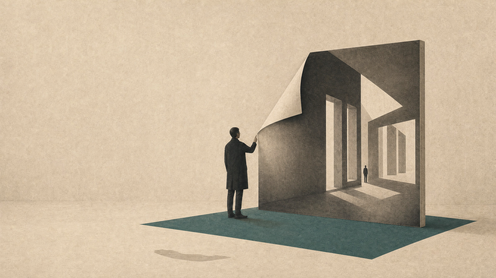

현실과 가상 사이에서 돈 이야기를 하지 않던 해06 · Metaverse EraPART 1

2020년 11월에 나는 두 번 무대에 올랐다. 두 발표의 슬라이드를 합치면 244장인데, 그중 값을 다루는 자리는 일곱 장이고 값이 어떻게 매겨지는지를 묻는 장은 한 장도 없다. 소유, 시장, 화폐, 지갑, 자산, 토큰, 코인, 가격, 거래. 두 벌을 합쳐 찾아보면 전부 0회다. 여섯 해 뒤에 그 파일들을 다시 열어 보니 두 발표는 한 벌의 파일에서 갈라져 나온 것이었다. 이 글은 값 이야기가 화제가 되기 전의 그 해에 내가 무대에서 무슨 말을 하고 다녔는지를 다시 읽은 것이다.
시리즈 안내 : 이 시리즈는 2020년 겨울부터 2021년 말까지 강연으로 한 말을, 그 말을 담고 다닌 파일과 함께 다시 읽은 것이다. 이 글은 세 편 중 첫 번째다. (1) 경계 (2) 크기와 값 (3) 출근.
여섯 해가 지나 그 무렵의 발표 파일들을 한자리에 모아 놓고 속을 열어 봤다. 여섯 벌에서 테마 파일의 해시값이 같았다. 그중 네 벌은 문서 속성의 생성 시각까지 같았다. 협정세계시로 2019년 11월 24일 17시 44분이다. 2020년 11월 12일자 파일을 따로 열어 봐도 같은 값이 나온다. 파일 하나를 다른 이름으로 저장해 가며 2년을 발표하고 다닌 것이다. 뿌리는 한 벌이고 내용은 일곱 갈래로 벌어졌다.
그 일곱 중 앞의 둘이 2020년 11월의 것이다. 남아 있는 파일은 12일자 117장과 26일자 127장이다. 아래는 그 두 벌을 처음부터 끝까지 다시 읽고 적은 것이다.
01아이는 주말에 두 시간, 아빠는 하루에 열 시간
12일 파일은 그해의 게임 하나로 연다. 두 번째 장에는 메타버스라는 단어가 대중들에게 처음으로 알려지기 시작한 2020년이라고만 적었다. 네 번째 장에는 해시태그 넷을 걸었다. 살아있다, 연결되다, 표현하다, 공유하다. 그 위에 두 줄을 붙였다. 현실과 연결되어 진행되는 실시간성, 그리고 편의성과 바꾸지 않는 은유적 인터페이스. 느리고 불편한 조작을 결함이 아니라 성질로 적어 둔 것이다.
다섯 번째 장은 게임 이름을 띄우고 그 밑에 한 줄을 달았다. 너무나 현실적이어서 오히려 현실을 다시 떠올리게 된다던 게임의 초반 진행. 여기까지는 그해 누구나 하던 이야기다. 일곱 번째 장에서 화면을 내 쪽으로 돌렸다. 글로벌 기업의 캠페인 기획과 제작을 맡아 게임 안에서 3달간 600시간을 보내야 하는 상황을 경험했다고 적었다.
그 600시간은 사람이 앉아 있던 시간이 아니라 기기에 집계된 시간이다. 기기 여러 대와 계정 여러 개로 굴렸고, 600시간은 두 대를 쓰던 초기의 값이자 프로젝트 3개월 시점의 값이다. 시간을 더 쓰는 대신 기기를 늘려 병렬로 확보한 시간이라, 이 수치는 기준을 함께 적어야 뜻이 산다.
같은 장 아래쪽에 한 줄이 더 있다. 게임의 본격 시작인 크리에이터 모드. 게임을 얼마나 오래 붙잡고 있었느냐가 아니라 만드는 기능이 열리는 지점을 두고 거기서부터가 시작이라고 적어 둔 것이다. 소비하는 자리와 만드는 자리를 가르는 이 선은 두 발표 내내 다시 나온다.
그리고 여덟 번째 장이 온다.
아이는 주말에 2시간. 아빠는 하루에 10시간. 그 아래 점 세 개를 찍고 물음 하나를 놓았다. 왜 아빠는 동물의 숲 안에서 저렇게 많은 시간을 보내는 것일까.
이 장에서 묻는 쪽은 내가 아니다. 아이다. 나는 나를 답하는 쪽에 놓았다. 바로 다음 장에 그 답을 적었다. 아이에게 그 게임은 새로운 곤충과 물고기를 수집하며 세상을 배우고 경험하는 공간이고, 나에게는 현실세계에서의 경제적 수익을 얻기 위한 업무의 공간이자 표현의 수단이라고 갈라 적었다. 같은 화면 앞의 두 사람을 서로 다른 자리에 세운 것이다. 여기서 뽑은 명제는 열다섯 번째 장에 한 줄로 올렸다. 현실과 가상에 대한 인식은 세상과 자신의 관계로부터 출발하는 상대적 개념.
그 무렵의 준비 노트에는 슬라이드에 오르지 못한 문장들이 남아 있다. 첫 번째 장벽은 아빠가 왜 저기에 저렇게 오래 있는지를 이해시키는 일이었다고 적었다. 그다음 줄에는 이제 내가 게임을 하고 있으면 아이가 조용히 문을 닫고 나간다고 적었다. 무대에 올린 것은 물음이고, 그 물음을 어떻게 정리했는지는 노트에만 적었다.
그 캠페인은 아이의 도움을 받아 함께 플레이하며 만들었다. 다섯 살이던 아이는 그 게임의 거의 모든 요소를 능숙하게 다룰 수 있게 됐다. 그 순서도 노트에 그대로 적어 두었다. 게임을 하고, 성취한 것을 프린트해 직접 도감을 만들고, 곤충과 물고기의 정보를 더 찾아보고, 장난감 도구로 놀다가, 실제 도구를 들고 밖으로 나갔다. 그다음이 공략집 분석이고 마지막이 설계자의 관점에서 게임을 보는 일이다. 시스템을 이해하고 데이터를 모아 공략하고, 때로는 정해진 규칙 바깥까지 가 보는 것.
마지막 칸만 떼어 놓으면 어른 혼자 도달한 자리처럼 읽힌다. 나는 그 칸을 도감을 만들고 밖으로 나갔던 과정의 끝에 두었다.
같은 노트에 그 시기의 선택을 두 갈래로 적어 두었다. 막아설 것인가, 먼저 가보고 이끌어줄 것인가. 나는 뒤를 택했다. 목표는 아이가 두 세계를 극단적으로 넘나들며 최대한 멀리 가보는 것이었고, 내 역할은 그 사이에 끊어져 있는 지점들을 연결하고 방향을 안내하는 것이라고 적어 두었다. 이 문장은 뒤에서 한 번 더 나온다.
발표는 여기서 곧장 이론으로 가지 않는다. 닌텐도의 아바타 시스템을 표제 한 장에 이어 열 장에 걸쳐 늘어놓는다. 엇갈림 통신과 어느새 통신, Wii Fit, Miiverse, Miitopia, MiiFighter, Miitomo, 그리고 친구모아 아파트. 그 뒤에 한 줄이 붙는다. 아직은 낯설었던 메타버스라는 단어, 경험을 감각에 새겨가며 나만의 개념을 확립. 정의를 먼저 세우고 사례를 붙이는 순서가 아니라, 만져본 것을 늘어놓고 그 위에서 말을 만드는 순서다.
02공룡과 지하철로 그린 지도
서른 번째 장부터 이 발표의 중심 도식이 나온다. 이름은 메타버스의 경험 지도이고 정의는 한 줄이다. 물질로 구성된 현실세계와 디지털의 가상세계를 넘나드는 경험의 흐름. 그 흐름을 그리려고 고른 표본이 둘인데, 둘 다 아이의 관심사다.
테마 1은 공룡이다. 슬라이드에 붙인 설명은 이렇다. 인생에 두 번 그 이름을 줄줄 외우게 된다는 공룡에 대한 경험. 지도에는 칸이 여섯 개 있다. 장난감과 그림책, 자연사 박물관, 테마파크 방문, 검색과 프린트, 다큐멘터리 감상, 그리고 AR 게임. 마지막 칸에 들어간 것은 2016년에 산 게임기용 증강현실 도구다. 준비 노트에는 그 칸들 사이를 오가며 나온 질문 둘을 적어 두었다. 공룡이 정말로 지구상에 존재했었나. 공룡은 완전히 멸종되어 볼 수 없는 것일까.
그 칸들을 왜 지도로 그렸는지도 노트에 한 줄 적었다. 개별 정보를 넘어 절차적 사고를 훈련하는 것이고, 그 훈련의 효과는 현실의 경험으로 전환됐을 때 실제로 나타난다는 것이다. 칸 하나하나가 무엇을 알려주는지보다 칸과 칸 사이를 건너다니는 동작이 남는다고 본 셈이다.
테마 2는 지하철이다. 설명은 이렇다. 주말마다 교통카드를 들고 나서는 둘만의 지하철 여행. 이쪽 지도도 여섯 칸이다. 무한대의 크기로 프린트할 수 있는 노선도 벡터 데이터, 2차원에서 3차원으로 넘어가는 페이퍼 토이, 원하는 현실을 만들어 돌려보는 시뮬레이션 게임 둘, 현실의 시간과 공간을 압축해 담은 유튜브 랜선 여행, 렌더링해서 쓸 수 있는 스케치업 모델 두 벌, 그리고 가상 세계에 재현된 지하철 맵.
노트 쪽에 더 구체적으로 적었다. 거실 벽의 노선도는 1년을 갔다. 각 역의 내부 구조도를 따로 찾아봤고, 종이 모형을 조립해 놓고 안내 방송을 무한 반복했다. 유튜브를 3배속으로 틀어 두면 집이 승강장이 됐다. 스케치업 모델은 사서 원하는 장면만 골라 렌더링한 뒤 프린트했다. 지도와 노선도와 도로 표지판과 개찰구를 따라가며 글자를 익혔다고도 적었다.
쉰한 번째 장에서 두 지도를 한 화면에 겹친다. 열두 개의 칸이 선으로 얽힌다. 제목은 복잡하게 얽혀있는 메타버스의 경험 지도이고, 다음 장에서 그 아래 한 줄이 더 붙는다. 아직은 연속적이지 못하고 연결 간의 이음매가 노출되는 상황. 같은 진단이 발표 뒤쪽에서 물음으로 바뀐다. 백다섯 번째 장이고, 뒤로 열두 장을 더 둔 자리다. 거기에 이렇게 적었다. 현재 존재하는 경험 사이사이의 이음매를 어떻게 지워나갈 것인가.
앞에서 노트의 한 문장을 남겨 뒀다. 그 사이에 끊어져 있는 지점들을 연결하고 방향을 안내해주는 것. 발표에서는 그것이 이음매를 지우는 일로 불린다. 한쪽에서는 아이 곁에서 할 일이었고 다른 쪽에서는 산업을 두고 내린 진단이었는데, 두 문장을 나란히 놓고 보면 같은 말이다.
그 뒤로 도식이 두 장 이어진다. 하나는 세 항을 메타버스 등장 이전과 이후로 두 번 그린 것이다. 아빠가 경험하는 세상, 아빠가 아이에게 보여줄 수 있는 세상, 아이가 경험하는 세상. 다른 하나는 시간의 축이다. 과거는 소비적 시간, 현재는 소비적 시간이 생산적 시간보다 큰 상태, 미래는 그 둘이 반대가 되는 상태. 그 위에 시간의 누적과 시간의 방향을 얹었다.
거기서 특이점이라는 말이 나온다. 더 이상 현실세계와 가상세계를 구분하여 사고하지 않게 될 것, 오히려 현실세계를 분별하기 위한 장치와 노력이 필요해지는 순간. 노트에는 이 대목의 이유가 한 줄 더 있다. 이전 세대와 다음 세대 모두가 처음으로 맞이하는 세상의 변화라서, 먼저 경험해보지 못하고 분별하지 못한다면 이전 세대가 리딩할 수 없는 세상이 된다는 것.
그 세대의 속성은 노트에 몇 줄 더 적어 두었다. 세상을 인식하는 순서가 현실에서 가상으로 단방향이지 않다는 것. 두 세계를 분리해 인식하는 쪽은 오히려 그 경계를 지나온 세대이고, 태어나면서부터 두 세계를 동시에 겪은 쪽은 경계를 구분하지 않는다는 것. 그래서 사실적인 연출과 효과로 감각을 속이려는 노력이 그들에게는 불필요하다는 것. 마지막 줄은 이렇다. 메타버스는 복제된 현실이나 대안적 현실이 아니라 그 자체로 수단이자 목적이 될 수 있다.
같은 노트에 메타버스의 정의를 두 개 적었다. 하나는 사전에서 옮겼고, 다른 하나는 이렇게 적었다. 나만의 정의, 나와 나의 아이가 살아갈 새로운 연결과 확장의 현실과 가상의 공간, 혹은 구분하여 정의할 수 없는 새로운 무언가.
03원이 커지는 쪽
발표의 나머지 절반은 연결축 네 개다. 매직서클, 공간 컴퓨팅, 버츄얼 빙, 통합적 세계관. 네 축이 무엇을 맡는지는 백다섯 번째 장에 한 줄씩으로 정리해 두었다. 인식의 변화와 행동의 변화, 공간의 생성과 연결, 인물의 생성과 연결, 그리고 끝없는 경험요소 제공. 앞 절에서 본 이음매의 물음을 그 네 줄 밑에 붙였다. 축을 세워 놓고 그 축들로도 아직 메워지지 않는다고 같은 장에 적은 셈이다.
매직서클은 호이징가가 말한 게임 속 규칙의 영역이다. 현실 위에 원이 그려지면 그 안에서 현실과 분리된 규칙이 작동한다. 나는 그 원이 커지는 쪽을 짚었다. 테마파크 같은 물리적 공간에서 그 원이 강하게 형성된다고 적어 두고 영화 스튜디오와 놀이공원 사진을 붙였다. 그다음이 위치 기반 포켓몬 게임의 도시 투어인데, 여기에 붙인 설명이 방향을 한 번 튼다. 가상세계 안에서 현실세계로의 입구를 찾아가는 반전의 상황. 그리고 도식 한 장으로 정리한다. 메타버스 등장 이전에는 매직서클이 가상세계 안에 있고, 이후에는 그 영역이 현실세계의 범위까지 넓어진다.
이 구간에 내가라는 말이 들어간 장이 하나 있다. 메타버스 속에서 유사한 외모와 성격의 내가 될 것인가, 아니면 완전히 새로운 내가 될 것인가. 나를 가리키는 말이 아니라 청중에게 던진 물음이다. 다음 장이 그 물음을 두 갈래로 벌린다. 한쪽은 현실세계와 연결된 관계를 기반으로 지리적, 사회적, 문화적 규칙에 가상세계의 특성을 더하는 길이고, 다른 쪽은 가상세계의 독립적인 관계를 기반으로 전에 없던 규칙과 관계를 새로 만드는 길이다. 노트에는 그 뒤에 한 줄이 더 있다. 기존의 규칙에 반하는 과격한 단계까지도.
공간 컴퓨팅은 현실세계 위에 시각적으로도 맥락적으로도 중첩되는 가상세계다. 여기에는 클라우드 기반의 공간 앵커, 비행 시뮬레이터, 안경 형태의 연구용 기기가 들어가고, 그다음에 거실 같은 일상 공간 위에 생성되어 덧입혀지는 콘텐츠 둘이 온다. 마지막 셋은 소리다. 공간과 맥락을 인식해 3차원 공간의 느낌을 주는 사운드 서비스들이다.
버츄얼 빙은 가상세계 안에서 자신을 대신할 수 있는 또 하나의 자신이다. 볼류메트릭 캡처와 코덱 아바타로 시작해서, 현실 인물을 기반으로 만든 게임 캐릭터와 가상 인물을 기반으로 운영되는 소셜 미디어를 나란히 놓는다. 가상 인플루엔서가 그 자리에 있고, 사람의 표정과 감정을 표현하는 에이전트가 둘 이어진다. 이 축의 마지막 장은 가상세계의 나를 원하는 곳 어디로든 무한대로 전송한다는 데모다.
통합적 세계관은 현실과 가상을 끊임없이 오가며 스펙트럼을 넓혀가는 세계관적 발상이라고 적었다. 사례는 하나다. 게임 세계관에서 나온 가상 아이돌 그룹과 그 세계관 안에서 파생된 캐릭터. 넉 장을 여기에 썼다.
그리고 지향점이 나온다. 순간의 경험을 만들기 위한 기법을 넘어 본질적으로 경험을 변화시킬 수 있는 사회적 기반으로. 그 아래에 한 줄이 더 있다. 이러한 방향을 고려한다면 책임과 비판에 대한 고민이 본격화될 것.
그다음이 리터러시다. 메타버스 안에서 보고 듣고 이해하고 판단하는 것, 그리고 자신 혹은 누군가에게 의미 있는 무언가를 제작하고 공유하는 것. 이 능력을 보여주는 사례가 셋 붙는데 앞의 둘은 이렇다. 하나는 자기가 만든 증강현실 필터를 소셜미디어로 손쉽게 퍼뜨리는 저작도구이고, 다른 하나는 소셜 VR 안에서 하나의 주제나 관심을 가지고 활동해 영향력을 확보한 미술관이다. 만드는 쪽과 모으는 쪽을 하나씩 세운 것이다. 셋째는 마지막 절에서 따로 적는다.
그 능력이 왜 필요한지는 노트에 예와 함께 적었다. 현실과 가상을 쉽게 구분하기 어려운 단계에 이르면 반대로 잘 구분되도록 돕는 장치가 필요해지는데, 그 시점에 이미 나와 있던 문제로 가짜 뉴스와 딥페이크를 들었다. 그리고 물음 하나를 세워 두었다. 1초의 찰나를 만들기 위한 단편적인 기법인가, 아니면 영속적인 인식의 변화를 만들어내기 위한 사회적 인프라인가. 뒤쪽이라면 책임과 비판이 함께 가야 한다고 적었다.
그 자리에 인용문도 하나 붙였다. 우리의 지식과 경험이 기술을 통해 경험하는 가상적인 범위에 머무른다면 기술이 가진 잠재성을 간과할 수 있다는 것. 가상현실로 본 세상을 전부로 여기는 것은 진정한 현실의 가치를 알아가려는 시도 자체를 그만두게 만든다는 것. 지도 서비스와 거리뷰로 여행지의 경험을 대신하는 데 그친다는 예까지 달았다. 경계를 지우자고 말해 온 발표가 마지막에 와서는 지워지면 안 되는 쪽을 적어 둔 셈이다.
노트 끝에는 사례를 고른 기준도 적어 두었다. 낮은 하드웨어와 낮은 그래픽 중심의 사례를 의도적으로 골랐다는 것. 이유는 그 아래에 있다. 메타버스는 갑자기 완성되어 다가오는 미래가 아니라는 것, 그리고 그곳에서 보낸 시간과 경험에는 지름길이 없다는 것. 사례 목록을 성능 순으로 세우지 않은 것도 그 기준 때문이었던 것 같다.
04피라미드 위에 찍은 여섯 개의 점
2주 뒤의 127장은 다른 문으로 연다. 두 번째 장에 물음 하나만 띄웠다. 지금의 변화 가운데, 무대와 관객, 그리고 예술은 무엇으로 정의되는가. 이 발표는 그 물음으로 열고 마지막에 같은 물음을 그대로 다시 띄우고 닫는다.
첫 사례는 루브르 피라미드에 붙인 대형 사진 작업이다. 유리 피라미드 둘레에 사진을 이어 붙여, 어느 각도에서 보면 피라미드가 사라지고 뒤편 건물이 이어져 보이게 만든 작업이다. 슬라이드에 붙인 설명은 이렇다. 별도의 카메라나 스크린을 거치지 않고 경험되는 가상적 스토리.
아홉 번째 장에서 나는 그 작업을 좌표로 뜯었다. 사진 한 장 위에 여섯 군데를 짚고 각각에 이름을 붙였다. 현실의 조형물과 여러 각도에서 만나는 지점. 조형물의 내부에서 밖으로 나오면서 바라보는 시점. 가상의 이미지가 시작되는 지점. 가상의 이미지가 심하게 왜곡되어 보이는 지점. 가상의 이미지가 벗겨져 현실의 표면이 드러난 지점. 그리고 마지막 하나는 지점이 아니다. 투명한 가상의 경계면에 서 있는 사람들의 감정.
다섯은 위치이고 하나는 감정이다. 경계를 개념이 아니라 설 수 있는 자리로 다뤘고, 그 자리에서 생기는 것을 기술이 아니라 감정으로 적었다. 이 발표에서 내가 한 일은 대체로 이런 것이다. 남이 만든 것을 앞에 놓고 어디가 경계인지 손가락으로 짚는 일.
이어지는 세 사례도 같은 방식이다. 한 브랜드의 설치 작업에서는 가상 공간 속의 행동이 현실 공간에서의 물리적 반응으로 연결된다고 적었고, 키네틱 조각에서는 반대로 현실 사물의 움직임이 가상 이미지와 분리된다고 적었다. 공항에 걸린 시계는 사람이 바늘을 그려 넣는 영상인데, 가상의 시계 이미지와 캐릭터가 실제 시간을 알려주는 시계로 기능한다고 적었다. 연결, 분리, 기능이다. 그리고 열세 번째 장에서 묶는다. 현실과 가상의 구분은 우리의 불명확한 인식으로부터 시작하고, 우리가 현실이라고 믿었던 것이 가상일 수도 있고 당연히 가상이라고 믿었던 것이 현실일 수도 있다.
여기까지가 현실에서의 가상이고, 다음 절이 가상에서의 가상이다. 카메라와 스크린과 세트와 편집을 거쳐 완성되는 이야기들. 스피커 광고 한 편을 두 단계로 나눠 보게 했다. 1단계는 넓고 깊게 바라보기, 2단계는 보이지 않는 것 보기. 그다음이 영화 넷이다. 인터스텔라는 4차원 공간을 표현하려고 현실에 3차원 세트를 지었고, 셜리에 관한 모든 것은 카메라에 담긴 영상이 그림처럼 보이도록 세트를 일부러 왜곡했다. 시네도키 뉴욕에서는 자기가 살아온 공간을 재현한 세트 안에 또 세트가 생기고 배우를 연기하는 배우가 생긴다. 마지막이 트루먼쇼다.
트루먼쇼에서는 대사 한 줄을 슬라이드에 그대로 옮겼다. 오늘 하루 다시 못 만날지 모르니 하루치 인사를 미리 해두죠. 좋은 아침, 좋은 오후, 좋은 저녁.
스물다섯 번째 장에서 질문이 다시 나온다. 짧은 순간의 가상 경험과 짧은 순간의 현실 인식을 나란히 적어 두고, 명백한 가상일지라도 만약 삶의 대부분을 그 속에서 살아간다면 그것은 가상일까 현실일까 하고 물었다. 다음 장에는 상태를 세 쌍으로 갈라 놓았다. 인지되는 상태와 느껴지는 상태, 믿어지는 상태와 부정되는 상태, 혼동되는 상태와 무시되는 상태. 괄호에 각각 이성과 감각, 인식과 신념, 몰입과 포기를 달았다. 그 아래 결론은 앞의 발표와 같은 자리로 간다. 우리가 가상을 인식하는 상대적 대상은 현실이다.
05유령 열차 뒤편
스물일곱 번째 장에서 이 발표만 쓰는 이름이 나온다. 가상과 현실의 경계를 구분할 수 있다고 믿지만 그 인식이 복잡하게 뒤섞이는 순간, 더 이상 무엇이 현실이고 가상인지 중요치 않은 낯선 무경계의 단계에 들어서게 된다.
그 단계를 설명하려고 고른 사례가 영국의 한 놀이공원에 있는 유령 열차다. 손님을 실제로 태워 이동시키면서 헤드셋 영상과 물리적 연출을 섞는 어트랙션이고, 절 표지를 빼고 다섯 장을 여기에 썼다.
그다음 장이 이 발표의 중심이다. 낯선 무경계의 단계를 만드는 요소를 두 칸으로 갈랐다. 기술적 요소 칸에는 헤드셋, 디스플레이, 프로젝션, 홀로그램, 사운드, 특수효과가 들어간다. 비기술적 요소 칸에는 컨셉, 스토리, 컨텍스트, 관계, 신뢰, 관성, 몰입, 제한된 감각, 제한된 정보가 들어간다. 아홉 개다. 기술 쪽보다 셋이 많다.
바로 다음 장에서 그 두 칸을 비용으로 다시 읽는다. 경계가 사라지는 상황에서 충분한 몰입을 위한 가상성을 제공하려면 막대한 공간과 시간과 기술과 비용이 필요해진다고 먼저 적고, 그 아래에 답을 놓았다. 경계 너머의 보이지 않는 면에서의 조작을 통해 보여지는 면에서의 연출의 가상성을 극대화할 수 있다.
보이는 쪽을 전부 만들면 감당이 안 되니 안 보이는 쪽을 손봐서 보이는 쪽을 키운다는 이야기다. 그해에 비용이 논지에 등장하는 자리는 여기다. 무엇이 얼마인가가 아니라, 감당이 안 될 때 무엇을 안 만들 것인가.
그 뒤로는 사례가 길게 이어진다. 서른여덟 번째 장은 등식 하나로 시작한다. 가상현실과 증강현실과 혼합현실을 더해 확장현실이라고 적어 두고, 그 기술의 발전으로 과거에 몰입을 만들기 위해 필요했던 공간과 시간과 연결과 분리와 자극이 극단적으로 압축돼 제공된다고 썼다. 몇 장 뒤에는 체험 공간이 넓어지는 단계도 적어 두었다. 360도 추적에서 책상 규모로, 방 규모로, 그리고 세계 규모로.
그다음에 VR 장비를 여섯 조각으로 뜯어 각 조각이 현실을 차단하는지 가상을 전달하는지 하나씩 붙였다. 헤드셋은 현실의 시야를 차단하고 스피커는 현실의 사운드를 차단한다. 렌즈와 디스플레이와 컨트롤러는 가상 쪽을 맡고, 마지막 하나는 물리적 공간이다.
가상 콘서트가 여러 장 이어지고, 무대 위 연출을 다루는 구간이 따로 있다. 벽과 바닥의 디스플레이 영상과 조명과 카메라가 무대 위 공연자와 물리적으로 상호작용한다고 적어 두고, 그 결과를 이음매 없이 연결된 무대 연출이라고 불렀다. 앞의 발표에서 지도의 진단어로 썼던 낱말을 여기서는 성취의 이름으로 썼다.
가장 긴 인용은 애니메이션 영화의 가상 프로덕션 이야기다. 감독과 배우와 조명감독과 카메라감독과 미술감독이 사전에 구현된 환경의 일부가 되어 현실에 가까운 감각으로 확인하며 소통하게 된다는 대목을 통째로 옮겨 놓고, 아래에 세 줄로 정리했다. 판매되고 체험될 수 있는 완성된 결과물로서의 MR, 더 나은 결과물을 만들기 위한 제작의 도구로서의 MR, 제작 과정에서의 협업과 소통을 위한 도구로서의 MR. 같은 기술을 결과물과 도구와 소통 수단으로 세 번 다르게 세운 것이다.
그다음 장은 헤드셋 하나를 두고 한 줄만 짚는다. 몰입 대신 창작을 강조했다는 것. 그 아래에는 새로운 예술 장르로의 가능성이라고 적었다.
예순여섯 번째 장에는 다섯 행짜리 대비표가 있다. 단절을 통한 몰입과 연결을 통한 몰입, 현실의 대체와 현실과의 중첩, 감각적 자극 중심과 상황적 몰입 중심, 가상 위치 기반과 실제 현실 위치 기반, 제한된 영역 기반의 배정과 전체 영역 기반의 생성. 왼쪽이 그때까지의 방식이고 오른쪽이 그다음이라는 배치인데, 다섯 줄 모두 오른쪽이 현실을 지우지 않는 쪽이다.
바로 뒤에 산업 이야기가 짧게 붙는다. 대회 중계 화면에 증강현실을 얹은 사례와 가상 공간 안에서 함께 경기를 보는 관전 모드가 나오고, 관전하는 사람들끼리 손인사나 대화 같은 인터랙션이 가능하다고 적었다. 이 구간의 정리도 두 줄짜리 대비다. 소비 주체로서의 참여와 창작 주체로서의 참여, 콘텐츠로서의 혼합현실과 서비스로서의 혼합현실. 그 아래에 절을 닫는 한 줄이 붙는다. 일상과 일탈, 현실과 가상, 그리고 세 가지 현실 기술의 구분이 사라진 낯선 무경계 단계로서의 메타버스. 앞에서 이름만 붙여 두었던 단계를 여기서는 산업이 서는 조건으로 썼다.
그다음 절은 몰입감 강화인데, 이 절만 두 갈래로 갈라 놓았다. 기술적 요소의 강화와 비기술적 요소의 강화다. 앞쪽에는 공간 컴퓨팅과 공간 사운드와 개발 프레임워크가 들어간다. 한 번 만든 콘텐츠를 여러 증강현실 플랫폼에 동시에 배포할 수 있게 됐다는 대목까지가 앞쪽이다. 뒤쪽에는 세계관이 들어간다. 앞에서 아홉 개로 세어 두었던 비기술적 요소가 여기서는 절 하나의 이름이 됐다. 유령 열차 앞에서 목록으로 적었던 것을 발표의 후반부 전체가 다시 받는 구조다.
발표의 마지막 큰 절은 존재적 확장이다. 멀리 떨어진 곳의 사람들을 가까이에 존재하는 것처럼 느끼도록 연결한다는 정의를 세워 두고, 소셜 VR 플랫폼의 2019년 키노트를 통째로 옮겨 놓았다. 사람들이 만나고 어울리는 번화한 마을 광장에서 시작해 새로운 장소를 탐험하고 커뮤니티를 만들고 자신의 경험을 만들 수 있는 상호연결된 세상으로 확장된다는 대목이다. 그 뒤에는 자동차 회사와 헤드셋 회사의 협업이 온다. 여기 붙인 설명이 이 절에서 가장 건조하다. 신체의 물리적 이동 시간을 체감적으로 상쇄하는 인포테인먼트의 발전 방향.
이 발표는 여는 물음을 그대로 다시 띄우고, 마지막 장에 한 줄을 남긴다. 현실과 가상, 그 경계면에서 새로운 예술 창작의 중심으로.
06두 벌 사이의 겹침
두 발표는 2주 간격이다. 하나는 아바타와 경험 지도로 짜였고 다른 하나는 설치미술과 영화로 짜였다. 제목이 다르고 청중도 달랐다. 그런데 두 파일에서 사례 이름을 뽑아 대조하면 겹치는 것이 나온다. 내가 이름 쉰여섯 개를 놓고 세어 본 것만 스물한 개다.
공룡 단편 영화, 위치 기반 게임 둘, 공간 앵커 기술, 거실 위에 덧입히는 증강현실 콘텐츠 둘, 공간 사운드 서비스 둘, 볼류메트릭 캡처, 코덱 아바타, 게임 원작 영화 한 편, 포트나이트의 이벤트 둘, 스마트폰 브랜드의 가상 인플루엔서 캠페인, 릴 미켈라, 에이전트 둘, 홀로그램 데모, 가상 아이돌 그룹, 증강현실 필터 저작도구, 그리고 소셜 VR 안의 미술관.
같은 자료가 어느 절 아래 서느냐만 달라진다. 증강현실 필터 저작도구는 12일 파일에서 메타버스의 리터러시 능력 절에 있고, 26일 파일에서는 디지털 스킨과 디지털 패션 절에 있다. 소셜 VR 안의 미술관은 한쪽에서 리터러시의 사례이고 다른 쪽에서는 텔레프레즌스의 사례다. 가상 아이돌 그룹은 한쪽에서 통합적 세계관의 마지막 사례이고 다른 쪽에서는 비기술적 요소의 강화를 보여주는 사례다. 공룡 단편 영화는 한쪽에서 경험 지도의 테마 1에 놓았고, 다른 쪽에서는 사실과 상상의 경계 영역을 말하는 자리로 옮겼다. 그 자리에 이런 물음을 함께 적었다. 1969년, 인류는 정말로 달에 착륙했을까. 그 장에는 이렇게 설명을 달았다. 공룡과 우주처럼 모두가, 혹은 대다수가 직접 경험하지 못한 사실과 상상의 경계 영역. 12일 파일에서 아이의 관심사로 놓았던 낱말을 26일 파일에서는 직접 겪어 볼 수 없는 것의 예시로 썼다.
한 사례에서는 오타까지 같이 옮겨졌다. 게임 원작 영화의 제목에서 알파벳 하나가 빠져 있는데, 두 파일 모두 같은 자리에서 같은 글자가 빠져 있다. 사례를 새로 조사해 넣은 것이 아니라 장을 그대로 복사해 다른 절 아래로 옮겼다는 뜻이다.
겹치지 않는 쪽도 세어 봤다. 12일 파일에만 있는 것이 열다섯이고 26일 파일에만 있는 것이 스물이다. 스물하나에 열다섯에 스물이니 대조한 쉰여섯 개가 그대로 나뉜다. 어느 쪽에도 없는 이름은 없었다. 닌텐도의 아바타 계보와 지하철 시뮬레이션 게임 둘과 위치 기반 게임 플랫폼은 앞쪽에만 있고, 가상 콘서트 플랫폼과 대회 중계와 명품 브랜드 협업은 뒤쪽에만 있다.
여기서 재사용의 성질이 갈린다. 겹치는 스물한 개는 대체로 기술 시연이고, 한쪽에만 있는 것은 대체로 그 자리에 맞춰 새로 고른 것이다. 뼈대는 돌려 쓰고 그 자리에 맞는 살만 새로 붙였다.
메커니즘은 단순하다. 사례 한 장에는 화면과 링크와 두 줄짜리 설명만 넣었고, 그 두 줄만 고치면 장이 다른 절 아래로 들어간다. 절 제목이 그 장의 뜻을 정한다. 그래서 같은 장이 한쪽에서는 기술의 사례가 되고 다른 쪽에서는 문화의 사례가 된다.
두 줄 가운데 하나는 대개 절 이름이다. 12일 파일은 사례 장마다 그 장이 속한 축의 이름을 머리에 달아 두었다. 축 이름이 적힌 장을 세어 보면 매직서클이 열일곱, 공간 컴퓨팅이 열셋, 버츄얼 빙이 열넷, 통합적 세계관이 일곱이다. 네 이름이 한 장에 함께 나오는 장은 둘뿐이다. 축을 처음 늘어놓은 쉰여섯 번째 장과, 앞에서 본 백다섯 번째 장이다. 26일 파일도 같은 방식으로 짜였다. 다양한 형태의 메타버스를 열일곱 장, 몰입감 강화를 열여섯 장, 존재적 확장을 스물두 장에 달았다.
머리에 달린 그 한 줄이 장의 소속을 정한다. 장을 옮기는 일이 그 줄 하나를 고쳐 쓰는 일과 같아지는 이유가 여기에 있다. 화면은 그대로 두고 소속만 바꾸면 같은 사례가 다른 이야기의 근거가 된다.
두 파일이 얼마나 화면 위주인지도 세어 봤다. 12일 파일은 117장 가운데 글자가 잡히는 장이 백한 장이고, 26일 파일은 127장 가운데 백열네 장이다. 나머지는 사진이나 영상 캡처만 있는 장이다. 글자가 있는 장도 대부분 두 줄짜리 설명이라, 한 장이 지고 있는 문장의 양이 애초에 적다. 장을 옮겨 심는 일이 쉬웠던 이유가 여기에 있다.
축약도 같은 방식이었다. 12일 발표의 117장은 그달 26일에 105장짜리로 한 번 더 냈고, 새 표지에는 패키징 버전이라고 적었다. 두 판을 장 단위로 대조해 보면 글자가 있는 장은 백한 장에서 백 장으로 한 장 줄었을 뿐이다. 빠진 것은 표지와 발표를 마무리하며라는 간지 한 장이고, 나머지 열 장은 전부 글자 없는 이미지 장이었다. 배포용으로 다듬는다는 것이 실제로는 표지를 갈고 간지를 빼고 사진 열 장을 덜어내는 일이었다.
26일자 127장 파일의 표지에도 같은 표기가 있다. 그러니까 그달 하순에 나는 두 발표를 같은 방식으로 한 번씩 다시 포장했다. 무대에서 넘긴 판과 남에게 건넨 판이 갈라지는 자리가 여기다. 여섯 해 뒤에 열 수 있는 것은 대체로 뒤쪽이고, 앞쪽이 어땠는지는 12일자 원본 하나로만 짐작할 수 있다.
12일 파일에는 발표자 노트 칸이 일흔세 개 붙어 있다. 열어 보면 전부 페이지 번호뿐이다. 원고는 한 줄도 없다. 슬라이드가 말할 것을 전부 지고 있었다는 뜻이고, 그래서 이 편에 옮길 수 있는 그날의 말은 내가 화면에 올린 것과 준비 노트에 적어 둔 것뿐이다. 26일 파일은 PDF로만 남아 있어 노트 칸 자체를 열어 볼 수 없다.
07돈은 각주에만 있었다
두 파일을 합치면 244장이다. 그 안에서 소유, 시장, 화폐, 지갑, 자산, 토큰, 코인, 가격, 거래를 찾으면 한 번도 나오지 않는다. 경제라는 낱말은 딱 한 번 나오는데, 아이에게 그 게임이 무엇이고 나에게 무엇인지를 갈라 적은 그 장이다. 현실세계에서의 경제적 수익을 얻기 위한 업무의 공간. 그해 내가 값에 대해 무대에서 한 말은 사실상 이 한 줄이다.
값을 붙인 자리가 아예 없지는 않다. 26일 파일에는 현실세계에서 가상세계로의 가치 이동이라는 머리말을 단 구간을 다섯 장 두었다. 그런데 그 다섯 장에 놓은 것은 브랜드 협업 사례뿐이다. 게임 캐릭터를 모티브로 한 시즌 라인업, 게임 안에서 열린 콘서트, 게임 안의 이벤트 둘. 가치가 이동한다는 말은 머리말에 있고, 무엇이 그 값을 만드는지는 다섯 장 어디에도 없다.
12일 파일에는 그런 구간이 두 장 있다. 리터러시 절의 세 번째 사례가 그것인데, 거기에 붙인 설명은 이렇다. 메타버스로의 진입로가 아닌 메타버스 안에서의 비즈니스적 기회 발견. 합쳐서 일곱 장이다. 244장 가운데 일곱 장이고, 그 일곱 장도 값이 어떻게 매겨지는지는 묻지 않는다.
액수를 적어 둔 자리는 26일 파일에 몇 군데 더 있다. 가상 콘서트 플랫폼에서 관객에게 모금한 금액이 두 번, 대회 상금 규모가 한 번이다. 아바타 플랫폼 설명에는 메타버스 내 수익의 기회를 제공한다는 줄을 넣었고, 소셜 VR 소개에는 경험과 창작과 수익의 기회가 한 세계 안에 구현된다고 적었다. 전부 각주다. 사례를 설명하는 두 줄 중 한 줄이지 그것을 물어보는 절이 아니다.
없는 것이 그냥 빠진 것이 아니라는 근거가 준비 노트에 있다. 12일 발표의 노트에는 여섯 번째 절이 있고 제목이 메타버스와 새로운 비즈니스의 기회다. 그 절에 적어 둔 것은 이렇다. 수익의 시점이 바뀐다는 것. 메타버스로 진입하는 과정에서 나오던 수익이 메타버스 안에서 나오는 수익으로 옮겨간다는 것. 안에서 생긴 수익을 어떻게 밖으로 옮길 것인가. 무한히 복제되는 디지털과 휘발되는 가상 속에서 어떻게 가치를 보존하고 신뢰의 문제를 풀 것인가. 그 아래에는 그 문제를 풀 기술과 서비스의 이름을 여럿 적어 두었다.
같은 노트의 다른 자리에는 예상되는 문제를 목록으로 세웠다. 중앙화와 탈중앙화의 문제, 현실의 가치를 가상으로 옮겨갈 때와 가상에서 생긴 가치를 현실로 꺼내올 때의 검증 문제, 가상 세계 안 이해관계의 거버넌스 문제, 보기 싫은 것은 가리고 보고 싶은 것만 보게 되는 선택적 인지의 문제, 가상의 경험을 현실의 경험으로 대체해 판단하는 확대적 인식의 문제. 다섯 중 둘이 값에 관한 것이다.
그 절도 그 목록도 슬라이드에 오르지 않았다. 117장 어디에도 없다. 그 자리에 남긴 것은 백열세 번째 장의 한 줄뿐이다. 노트의 여섯 번째 절 전체를 한 줄로 접어 사진 한 장 위에 얹었다.
접은 것이 판단이었는지 시간이 모자랐던 것인지는 파일로 알 수 없다. 알 수 있는 것은 결과다. 준비할 때는 값의 이동을 여섯 번째 절로 세워 두었고, 무대에 올라서는 한 줄만 남겼다.
접힌 것이 그 절만은 아니었다. 노트를 끝까지 읽으면 골격이 한 벌이 아니다. 가로줄로 여덟 번 끊겨 있고, 앞쪽 골격이 인트로에서 리터러시를 지나 비즈니스의 기회로 닫히는데, 그 뒤로 번호가 다시 앞으로 돌아가 매개라는 이름의 네 번째 절과 아웃트로가 또 나온다. 뒤쪽 골격에 있는 것은 이렇다. 모방과 환상을 양 끝에 둔 스펙트럼, 증강과 재현을 한 축으로 사적인 것과 공적인 것을 다른 축으로 놓아 넷으로 가른 분류, 그 분류 안의 미러월드와 라이프로그, 매개로서의 신체를 시야각과 디스플레이의 크기로 따진 대목, 그리고 시각에서 청각으로 다시 미각과 후각과 촉각으로 넓혀 가는 구간.
이 다섯 가운데 슬라이드에 오른 것은 하나도 없다. 낱말 단위로 찾아도 117장에 한 번도 나오지 않는다. 뒤쪽 골격이 예로 들었던 화면 가운데 넘어온 것도 하나뿐이다. 앞에서 공간 컴퓨팅 축의 사례로 지나간 안경 형태의 연구용 기기가 그것이다. 나머지는 화면도 개념도 함께 빠졌다.
그러니까 12일에 무대에 올린 것은 노트에 있던 두 골격 중 한 벌이다. 다른 한 벌은 파일 안에 그대로 남았다. 올린 쪽과 남긴 쪽을 갈라 보면 성격이 보인다. 무대에 올린 것은 겪은 일과 남이 만든 화면이고, 노트에 남긴 것은 분류 체계와 값이다.
그 자리를 대신 채운 것은 만드는 쪽 이야기다. 앞에서 크리에이터 모드에서부터가 게임의 본격 시작이라고 적어 둔 장을 봤다. 리터러시를 정의한 장에서는 보고 듣고 판단하는 데서 끝내지 않고 자신 혹은 누군가에게 의미 있는 무언가를 제작하고 공유하는 것까지를 능력으로 묶었다. 26일 파일은 산업을 정리하면서 소비 주체로서의 참여와 창작 주체로서의 참여를 나란히 놓았고, 헤드셋 하나를 두고는 몰입 대신 창작을 강조했다는 점만 짚었다. 값이 들어설 자리에 계속 만드는 쪽이 들어가 있다.
마지막 장도 그렇다. 12일 발표는 이렇게 닫았다. 메타버스에서 무엇을 경험하고 싶은가라는 질문에서 메타버스를 통해 어떤 존재가 되고 싶은가로의 전환. 26일 발표의 마지막 장은 예술 창작의 중심이라는 말로 닫는다. 두 발표가 다른 청중 앞에서 다른 재료로 갔는데 마지막 장은 둘 다 존재와 창작이다.
그래서 그해 내가 무대에서 선 자리는 멀었다. 두 파일을 통틀어 내가 나를 가리키며 쓴 문장은 하나뿐이다. 나에게 동물의 숲은 무엇이라는 그 한 줄. 26일 파일에는 1인칭이 아예 없다. 나는 아이가 매체 사이를 건너다니는 것을 지켜봤고, 남이 만든 작업 앞에 서서 어디가 경계인지 짚었다. 그러고는 이음매가 노출된다고 진단했다.
준비 노트의 첫 줄도 그 자리를 가리킨다. 왜 내가 여기에 있는가라고 적어 두고 그 아래에 답을 달았다. 나는 메타버스에 가깝게 살아가고 있는 사람. 전문가라서가 아니라 가까이 살고 있어서 나왔다는 것이고, 슬라이드 244장의 배치가 실제로 그 문장대로다. 이론이 먼저 서는 자리가 드물다. 만져본 것과 남이 만든 것이 앞에 서고 말은 그 뒤에 붙는다.
지켜보기만 한 것은 아니다. 그해에 나는 그 게임 안에서 기기 여러 대로 수백 시간을 보내고 있었다. 다만 그 시간을 무대에서 값으로 계산해 보이지는 않았다. 슬라이드에 오른 것은 시간의 양과 그 시간이 낳은 물음이었지 그 시간의 값이 아니었다.
다음 편은 그다음 해다. 2021년 봄의 파일을 열면 1장의 제목이 우리가 인식하는 세상의 크기다.
*시리즈 : (1) 경계 (2) 크기와 값 (3) 출근*
*이 글은 신기헌의 디지털 트윈 프로젝트를 바탕으로 AI 에이전트가 100% 작성하고 편집했다. 원문 포스팅은 여기에 있다. https://kiheonshin.github.io*
*Written and edited 100% by an AI agent from the Kiheon Shin Digital Twin project. Originally published at https://kiheonshin.github.io*